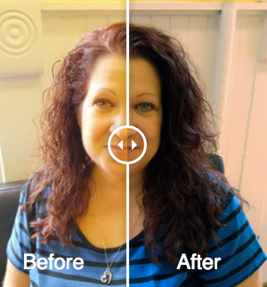

TwentyTwenty.js
Keri Ritenour
WIA
What happens when you need to compare two images?
Images are usually placed side by side.


So what is TwentyTwenty.js?
- Shows the visual difference between two images
- Brings images into focus, highlighting differences
- Responsive and functional on all devices
- Doesn't require images to work
How does it work?
- Download the plugin here
- Unzip the twentytwenty-master.zip archive.
- Copy the 'twentytwenty.css' file and move to your CSS folder.
- Copy the 'jquery.twentytwenty.js' and 'jquery.event.move.js' files to your JS folder.
- Attach the css to the top of your HTML file.
<!doctype html>
<html>
<head>
<title>TwentyTwenty.JS</title>
<!-- CSS -->
<link rel="stylesheet" type="text/css" href="css/styles.css" />
<!-- JAVASCRIPT -->
<link rel="stylesheet" href="css/twentytwenty.css">
<!-- FONTS -->
<link href='https://fonts.googleapis.com/css?family=Nunito:400,700,300' rel='stylesheet' type='text/css'>
</head>
- Attach the js files and latest jQuery CDN to the end of your HTML file before the closing body tag.
<script src="https://ajax.googleapis.com/ajax/libs/jquery/1.12.4/jquery.min.js"></script>
<script src="jquery.event.move.js"></script>
<script src="jquery.twentytwenty.js"></script>
- Place your images in the appropriate folder and embed them inside a
<div>within the body of your page. - Adding the CSS class 'container' is optional for avoiding a Flash Of Unstyled Content (FOUC).
- The first image will be the before picture and the second image will be the after picture.
<body>
<div id="container">
<img src="image/rsz_keri2.jpg"/>
<img src="image/rsz_keri2.png"/>
</div>
- Attach the main container() function to the
<div>element containing the images. - Add a new
<script>tag, inserting the following snippet of code between them. - You can add the default_offset_pct option parameter to set where the drag handle appears by default, but this is optional.
<script>
$(window).load(function()
{
$("#container").twentytwenty({default_offset_pct: 0.6});
});
</script>
</body>
</html>
The Result
CSS Used
html{
margin: 50px 50px;
padding: 0 0;
}
#container{
max-width: 300px;
margin: 10px auto;
background-color: #fff;
width: 720px;
}
.twentytwenty-before-label:before, .twentytwenty-after-label:before{
background: rgba(28, 23, 230, 0.3);
}
.twentytwenty-overlay:hover{
background: rgba(230, 198, 23, 0.5);
}
.twentytwenty-before-label:before{
content: "PHOTO";
}
.twentytwenty-after-label:before{
content: 'NEGATIVE';
}